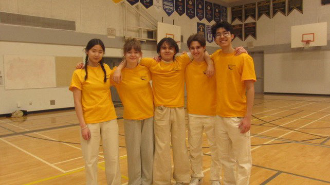
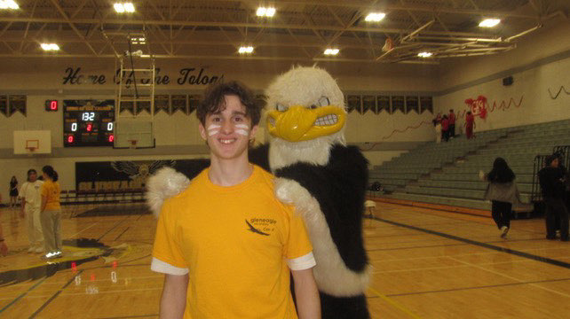
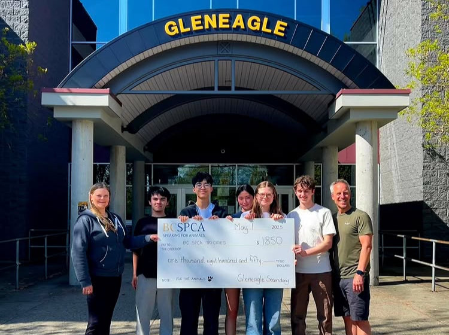

What is the Spirit Assembly
The Spirit Assembly is a yearly tradition at my high school, Gleneagle Secondary School, where each grade, as well as teachers & staff, compete against each other in a series of fun games, with the goal of boosting school community and raising money for charity. It is a large scale event, involving the entire school (1300+ people), as well as organizations outisde of the school through guest speakers, performers, and sponsors. At Gleneagle, the Spirit Assembly is entirely organized and run by members of the Con X Program, a leadership program which trains students' leadership skills through community initiatives and volunteering opportunities.
My Role
In my senior year, myself and four other Con X members undertook the planning for the
Spring 2025 Spirit Assembly. The project overall
required a massive amount of planning, including scheduling, coordinating with school admin and other organizations,
managing donations, marketing and social media, acquiring equipment, script writing, training volunteers, art design for the assembly, and reaching out to potential sponsors.
Many of these responsibilites were delegated within the group, and my contribution was
mainly around coordinating with admin and school clubs, script writing, training volunteers, reaching out to sponsors,
and planning the logistics of the assembly itself. I had also volunteered to be one of the
emcees of the assembly, which was quite intimidating as it would be my first time speaking in
front of 1000+ people.


I was determined to make this assembly special by doing something that hasn't been done before, my idea was to orchestrate a starting performance similar to those of many concerts, where the performing artist will enter the stage in a dramatic and flashy way, only we would replace the artist with the school mascot, "Terry the Talon", and the performance would be a live band paired with a pre-recorded video and the a performance from the school cheer team. I spearheaded this idea mostly on my own, coordinating with the band, cheer team, and my photographer friend. I believe this to be my proudest contribution, since it was innovative and brought to life through my own initiative. You can watch the final product of the opening performance, as well as a highlight video of the assembly in the following links:
Opening Performance Video: https://www.instagram.com/reel/DIaPlQJpOYy/
Assembly Highlights Video: https://www.instagram.com/reel/DIrZ8B_Ti77/
Our assembly was also focused on raising money for the BCSPCA, and we had a BSCPCA guest speaker at the assembly to talk about the mission of the BCSPCA. As for the fundraiser, we managed to raise $1850 through donations alone, which was just shy of our ambitious goal of $2000, but still a great result and well above the standard for Spirit Assemblies.

Takeaways
Through the amount of coordination required for the assembly and through the constant communication with my team, I've trained my ability to communicate with clarity and precision. Speaking in front of a large audience also gave me the opportunity to truly test and improve my public speaking. Lastly, my experience with the opening performance gave me confidence in pursuing my own ideas and bringing them to life, as well as taught me principles of resourcefulness and strategy in the process of attaining my goals.